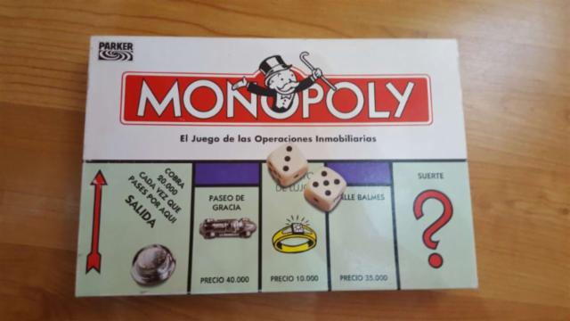

Antes
Un juego creado con la funcion de servir como herramienta para enseñar las teorias acerca de la justsicia social y economica extraidas del estudio titulado Progreso y Miseria de Henry George
Monopoly
Comerciado por vez primera en el año de 1936.
A lo largo de 80 años, el juego a sifrido una notable evolución. Sus múltiples ediciones han dado pie a que se cambiara desde la caja que lo contiene hasta los elementos que lo componen. Logrando así, mantenerse como el favorito a través de las décadas.
Ahora
Con los años la finalidad del juego cambió para solo disfrutar un buen rato, negociando propiedades y hasta haciendo uso de los medios electrónicos para todas las transacciones que requiere el juego.